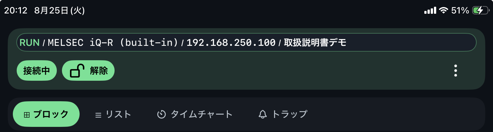

MELSEC
通信設定、ルーティング、Demo、到達確認は MELSEC ページで確認します。
Connection
接続先切替、プロジェクト選択、上部ステータスの確認方法を説明します。
初回は はじめかた が表示されます。接続する PLC メーカー、または操作を確認する Demo を選びます。通常は前回の接続先から再開します。


RUN/STOP/PROGRAM / CPU機種 / IP / プロジェクト名。RUN、STOP、PROGRAM の文字で確認します。通信設定、ルーティング、Demo、到達確認は MELSEC ページで確認します。
通信設定、デバイス表記、Demo、到達確認は KEYENCE ページで確認します。